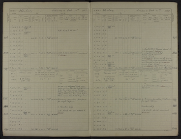

Navigation
index
next
|
previous
|
Transcription Best Practice
»
Transcription project case studies
»

Table Of Contents
The transcription problem
Existing guidance
Transcription project case studies
Large-scale professional transcription
Small-scale professional transcription
Student Projects
Citizen Science
Automated systems
Get the source code
Github source repository
Found a bug, or have a suggestion?
Please
raise an issue
.
Weather observations from marine expeditions
¶
Surface weather as reconstructed by the 20th Century Reanalysis, and as observed by the
Imperial Trans-Antarctic Expedition
. Grey fog marks areas where the reanalysis is very uncertain.
Repository with the rescued data
Paper on some of the expeditions
Navigation
index
next
|
previous
|
Transcription Best Practice
»
Transcription project case studies
»